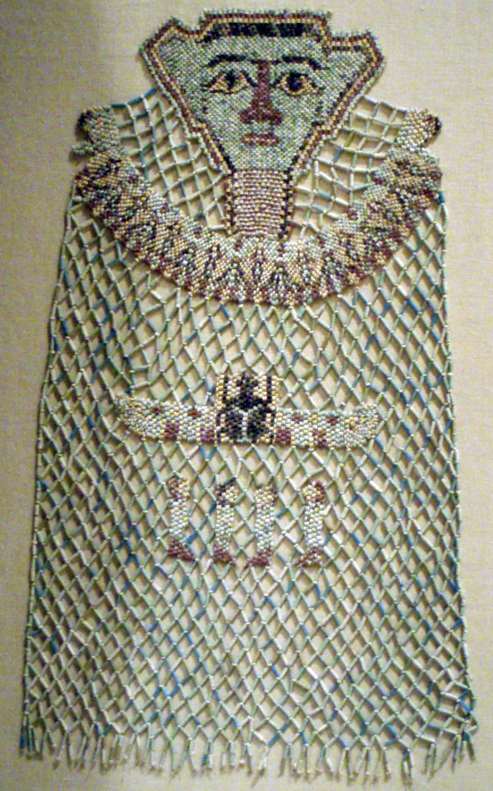

История
Бисероплетение - старинное искусство. История бисероплетения уходит корнями в века. В Древней Руси мастера давали внучкам уроки бисероплетения. Сегодня бисероплетение вновь в моде: оно соответствует стилю современной жизни со свободным графиком работы. Ювелирные украшения из бисера носят все, в любом обществе: дамы, девочки и бабушки. Русский бисер вновь завоевал мировые позиции. Искусство бисероплетения зависит от культуры мастеров. А она у нас высока, как нигде в мире!
Бисер - это материал, рожденный огнем, соединенным с ловкостью рук человека и богатством его воображения. Бисер - это мир, в котором сплетаются самые разнообразные грани человеческого дарования: мастерство стеклодела, умение вышивальщика и фантазия художника. Стеклоделие можно сравнить с деревом, ствол которого составляет сам исходный материал, а ветви - те направления, в которых этот материал находил себе применение. Одним из направлений стеклоделия является изготовление бисера и стекляруса. Бисероплетение - это мир малых форм, который проходит через историю всех человеческих цивилизаций. Первыми и сразу полюбившимися украшениями из стекла были бусы. Раскопки гробниц свидетельствуют о том, что в Древнем Египте производство стеклянных бус находилось на достаточно высоком техническом уровне. По мере совершенствования техники появилась возможность делать бусины все мельче и мельче, и постепенно они превратились в бисер. Из разряда привилегированных драгоценностей эти украшения постепенно становились все более распространенными. Из Египта стекольное производство распространяется на Кавказе и в Риме, проникает в Византию, Центральную и Северную Европу.